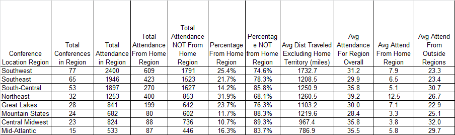

Distance Traveled if attending conference not in Home Region

Actual attendee to location city distance computed.
If attending conference in home region, the distance was not included.
This allows some observations to be made - such as not many people travel to the northeast from the southwest.